「我们只能支持这么多。」台积电一位不愿具名的高管在上周的内部会议中这样描述公司的产能现状。这不是谦虚，而是在全球 AI 军备竞赛进入白热化的今天，一个冰冷的物理现实。
全球 90% 以上的 AI 训练芯片由台积电生产——这个概念如果展开：你手上的 iPhone A17 Pro 芯片、NVIDIA H100/B200 的每一个核心、AMD MI300X 的每个计算单元、甚至 Google TPU 和亚马逊 Trainium 的自研芯片，全部出自台积电的先进制程线。当这家超级工厂公开表示「产能吃紧」，客户名单里任何一个名字——NVIDIA、Apple、AMD、Qualcomm——都会重新审视自己的产品路线图。
「台积电3nm和5nm产线的利用率已经连续三个季度超过100%，超负荷运转是常态。新厂从动工到量产至少需要 4-5 年，这不是靠加班能解决的。」——郭明錤（Ming-Chi Kuo），天风国际分析师
先看一组数字。台积电目前拥有全球最先进的 3nm（N3）制程，良率在 2025 年下半年已达 85% 以上。但一个 3nm 晶圆厂的投资起点是 200 亿美元，建设周期 4-5 年。即便台积电 2025 年资本支出已达 360-400 亿美元，比 2022 年的 360 亿高出不少，但依然无法同时满足所有客户的需求。
原因很简单：台积电不是只有一个客户。NVIDIA 要吃 H100/B200 产能，Apple 要吃 A19/M5 产能，AMD 要吃 MI400 产能，Intel 的 Arrow Lake 也要挤进来。到了 2026 年，这个名单还要加上微软的 MAI 系列推理芯片和 Meta 的新一代定制加速器。
台积电在亚利桑那州的第一座工厂推迟到 2026 年才进入试量产，比最初规划晚了两年多。即便量产，初期月产能也只有 2-3 万片晶圆——相比台积电全球月产 150+ 万片的规模，简直是杯水车薪。日本熊本工厂的进展稍快一些，但主要负责成熟制程（28nm 以上），对 AI 芯片的先进制程产能几乎没有帮助。
如果说供给端的问题是物理限制，需求端的逻辑更加残酷——每一代大模型的参数规模都在指数增长。OpenAI 的 GPT-6 据传参数规模超过 50 万亿，相比 GPT-4 的 1.8 万亿增长了近 28 倍。即使 MoE（混合专家）架构能降低推理时的算力消耗，训练时的算力需求依然是实打实的。
更致命的是推理端的爆发。ChatGPT 月活突破 10 亿，每天处理的 token 量级以万亿计。Claude、Gemini、DeepSeek 等分羹者还在不断涌入。微软 CEO Satya Nadella 在 Build 2026 上透露，Copilot 的推理算力消耗在过去半年增长了 3 倍。
从芯片需求的构成来看：
微软在 Build 2026 上发布的 MAI-Thinking-1 推理芯片，被广泛视为「不再依赖 NVIDIA」的标志性动作。类似的策略在 Google（TPU v6）、Amazon（Trainium 3）、Meta（MTIA v3）上都已落地。自研芯片的好处是摆脱对其他供应商的依赖、压低推理成本，但坏处是——这些芯片最终都要找台积电代工，反而加剧了产能紧张。
「每一家科技巨头都在说自己造芯片，但他们都忘了所有自研芯片用的是同一家工厂。」——Dylan Patel，SemiAnalysis 首席分析师
最受伤的其实不是巨头——他们有预算提前一年预订产能。真正被挤压的是 AI 创业公司。训练一个千亿参数模型需要在 H100 集群上跑几个月的成本，现在是 5000 万到 2 亿美元。在芯片供不应求的背景下，新的创业者可能连 H100/B200 都抢不到，只能用降级的型号。这意味着模型能力从一开始就受到了硬件的限制。
一些公司已经开始转向性价比较低的替代方案：AMD MI400 的交付周期相对较短，但软件生态（ROCm）与 NVIDIA CUDA 的差距依然存在。有团队反馈，从 H100 迁移到 MI400 需要 4-6 周的适配时间。在 AI 行业「拿钱换时间」的竞赛节奏里，这足以让一个创业公司被竞争对手甩开。
芯片交货周期从 2023 年的平均 14 周延长到了现在的 22+ 周。H100 在高峰时期的转售价格一度被炒到 4 万美元/颗（官方建议零售价约 2.2 万美元）。B200 虽然开始放量，但订单依然排到了 2027 年。作为对比，5nm 晶圆报价从 2020 年的每片约 1.6 万美元涨到了现在的 2.2 万美元。
来自台积电和相关分析机构的预测呈现以下几个时间节点：
长期来看，算力市场的结构正在发生根本性变化：从「通用 GPU 一统天下」走向「GPU 做训练 + 自研 ASIC 做推理 + 边缘 NPU 做端侧」的三层架构。这意味着芯片市场的竞争将从单一的 NVIDIA 对抗变成多维度的混战。
台积电的产能瓶颈不是一个短期问题，而是一个结构性的行业天花板——当所有 AI 公司都需要同一家工厂时，芯片就从一个工业品变成了战略性资源。未来 2-3 年内，「能抢到 GPU」本身就是核心竞争力。对于开发者和投资人来说，关注那些在算力效率上有真正优化的公司，可能比追逐参数最大的模型更有实际意义。
原文：The Verge 报道 → · 补充数据来源：SemiAnalysis → · Omdia →